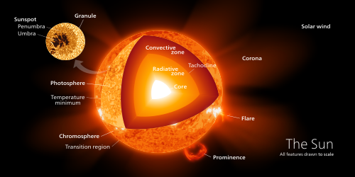

*Basics
The Sun is the star at the center of the Solar System. It is a nearly perfect ball of hot plasma,[18][19] heated to incandescence by nuclear fusion reactions in its core, radiating the energy mainly as visible light, ultraviolet light, and infrared radiation. It is by far the most important source of energy for life on Earth. Its diameter is about 1.39 million kilometers (864,000 miles), or 109 times that of Earth. Its mass is about 330,000 times that of Earth, and it accounts for about 99.86% of the total mass of the Solar System.[20] Roughly three quarters of the Sun's mass consists of hydrogen (~73%); the rest is mostly helium (~25%), with much smaller quantities of heavier elements, including oxygen, carbon, neon and iron.[21]

*About Name
The English word sun developed from Old English sunne. Cognates appear in other Germanic languages, including West Frisian sinne, Dutch zon, Low German Sünn, Standard German Sonne, Bavarian Sunna, Old Norse sunna, and Gothic sunnō. All these words stem from Proto-Germanic *sunnōn.[24][25] This is ultimately related to the word for sun in other branches of the Indo-European language family, though in most cases a nominative stem with an l is found, rather than the genitive stem in n, as for example in Latin sōl, ancient Greek ἥλιος (hēlios), Welsh haul and Russian солнце (solntse; pronounced sontse), as well as (with *l > r) Sanskrit स्वर (svár) and Persian خور (xvar). Indeed, the l-stem survived in Proto-Germanic as well, as *sōwelan, which gave rise to Gothic sauil (alongside sunnō) and Old Norse prosaic sól (alongside poetic sunna), and through it the words for sun in the modern Scandinavian languages: Swedish and Danish solen, Icelandic sólin, etc.[25]
In English, the Greek and Latin words occur in poetry as personifications of the Sun, Helios (/ˈhiːliəs/) and Sol (/ˈsɒl/),[2][1] while in science fiction Sol may be used as a name for the Sun to distinguish it from other stars. The term sol with a lower-case s is used by planetary astronomers for the duration of a solar day on another planet such as Mars.[26]
*Sunlight Detail
The solar constant is the amount of power that the Sun deposits per unit area that is directly exposed to sunlight. The solar constant is equal to approximately 1,368 W/m2 (watts per square meter) at a distance of one astronomical unit (AU) from the Sun (that is, on or near Earth).[47] Sunlight on the surface of Earth is attenuated by Earth's atmosphere, so that less power arrives at the surface (closer to 1,000 W/m2) in clear conditions when the Sun is near the zenith.[48] Sunlight at the top of Earth's atmosphere is composed (by total energy) of about 50% infrared light, 40% visible light, and 10% ultraviolet light.[49] The atmosphere in particular filters out over 70% of solar ultraviolet, especially at the shorter wavelengths.[50] Solar ultraviolet radiation ionizes Earth's dayside upper atmosphere, creating the electrically conducting ionosphere.[51]
Structure & Fusion
The structure of the Sun contains the following layers:
"Core" – the innermost 20–25% of the Sun's radius, where temperature and pressure are sufficient for nuclear fusion to occur. Hydrogen fuses into helium (which cannot itself be fused at this point in the Sun's life). The fusion process releases energy, and the core gradually becomes enriched in helium.
"Radiative zone" – Convection cannot occur until much nearer to the surface of the Sun. Therefore, between about 20–25% of the radius, and 70% of the radius, there is a "radiative zone" in which energy transfer occurs by means of radiation (photons) rather than by convection.
"Tachocline" – the boundary region between the radiative and convective zones.
"Convective zone" – Between about 70% of the Sun's radius and a point close to the visible surface, the Sun is cool and diffuse enough for convection to occur, and this becomes the primary means of outward heat transfer, similar to weather cells which form in the earth's atmosphere.
Because the Sun is a gaseous object, it does not have a clearly defined surface; its visible parts are usually divided into a "photosphere" and "atmosphere":
"Photosphere" – the deepest part of the Sun which we can directly observe with visible light.
"Atmosphere" – a gaseous "halo" surrounding the Sun, comprising the chromosphere, solar transition region, corona and heliosphere. These can be seen when the main part of the Sun is hidden, for example, during a solar eclipse.

Core
The core of the Sun extends from the center to about 20–25% of the solar radius.[71] It has a density of up to 150 g/cm3[72][73] (about 150 times the density of water) and a temperature of close to 15.7 million kelvins (K).[73] By contrast, the Sun's surface temperature is approximately 5800 K. Recent analysis of SOHO mission data favors a faster rotation rate in the core than in the radiative zone above.[71] Through most of the Sun's life, energy has been produced by nuclear fusion in the core region through a series of nuclear reactions called the p–p (proton–proton) chain; this process converts hydrogen into helium.[74] Only 0.8% of the energy generated in the Sun comes from another sequence of fusion reactions called the CNO cycle, though this proportion is expected to increase as the Sun becomes older.[75][76]
The core is the only region in the Sun that produces an appreciable amount of thermal energy through fusion; 99% of the power is generated within 24% of the Sun's radius, and by 30% of the radius, fusion has stopped nearly entirely. The remainder of the Sun is heated by this energy as it is transferred outwards through many successive layers, finally to the solar photosphere where it escapes into space through radiation (photons) or advection (massive particles).[55][77]